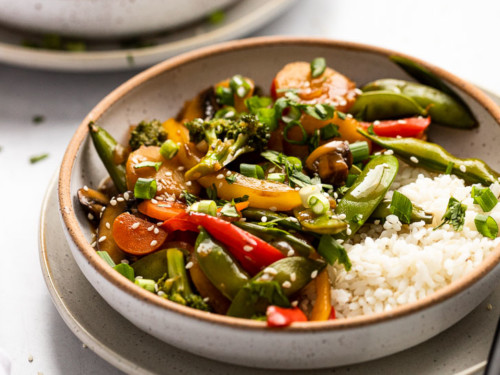

Lazy Vegetable Stirfry

Description
This is a really easy, dirt cheap and customizable stir fry you can
put together in a few minutes. You can make it as lame or as bougie
as you like by swapping individual ingredients for fresher, higher
quality ones.
Ingredients
- Frozen Asian Vegetables
- Kung Pao Stir Fry Sauce
- Rice or Noodles
- Sesame Oil
- Optionally, tofu or other meat substitute
Steps
- Cover wok or saute pan with a light coat of sesame oil on
high heat.
- Add vegetables first. Season well with salt and pepper.
Saute for 7 minutes or so.
- If adding meat substitute or noodles, add them now. Either way,
add kung pao sauce to the vegetables and coat. Saute for another 5 minutes.
- Serve as is or over rice.
Return to main page...